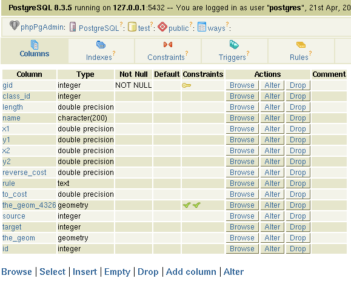

Transforming, describing and testing the data¶
After you have loaded the .osm-File in the database via osm2pgrouting, the table-structure should look like:

You need to know: The geodata from OSM lie in the WGS84-reference-system, that has the epsg-code:4326.
For our tutorial we work with the “Google-Projection” that has the epsg-code 900913.
First of all you need to bring the code for 900913 in the database and in the epsg-file of the proj-library.
Be carefull: Different codes for 900913 exist (it took me a couple of hours to understand that this was the reason, that my geodata were located 80 kilometers too much in the south), so, as an SQL-command use the following to bring 900913 in the spatial_ref_sys-table:
INSERT INTO spatial_ref_sys (srid, auth_name, auth_srid, srtext, proj4text) VALUES (900913, 'EPSG', 900913,
'PROJCS["unnamed",GEOGCS["unnamed ellipse",DATUM["unknown",SPHEROID["unnamed",6378137,0]],
PRIMEM["Greenwich",0],UNIT["degree",0.0174532925199433]],
PROJECTION["Mercator_2SP"],PARAMETER["standard_parallel_1",0],PARAMETER["central_meridian",0],PARAMETER["false_easting",0],
PARAMETER["false_northing",0],UNIT["Meter",1],EXTENSION["PROJ4","+proj=merc +a=6378137 +b=6378137
+lat_ts=0.0 +lon_0=0.0 +x_0=0.0 +y_0=0 +k=1.0 +units=m +nadgrids=@null +wktext +no_defs"]]',
'+proj=merc +a=6378137 +b=6378137 +lat_ts=0.0 +lon_0=0.0 +x_0=0.0 +y_0=0 +k=1.0 +units=m +nadgrids=@null +wktext +no_defs');
In the epsg-file (should be in /usr/local/share/proj/epsg) write at the end:
<900913> +proj=merc +a=6378137 +b=6378137 +lat_ts=0.0 +lon_0=0.0 +x_0=0.0 +y_0=0 +k=1.0 +units=m +nadgrids=@null +no_defs
... so you have the possibility now to transform your geodata.
To get that, you need to remove the constraint that your geodata has to be in 4326. After that rename the column “the_geom” in the table ways to “the_geom_4326” and add a new column “the_geom” (as geometry).
After that you need to change the table geometry_columns. You need to type that the srid for the_geom (table ways & and vertices_tmp) is 900913 as well (!!!)
Then do the SQL-command:.
UPDATE ways SET the_geom=transform(the_geom_4326,900913)
...and your data in the_geom exist in the “Google Projection”.
Furthermore you need to add a column “id” (integer) to the table “ways” to work with the routing-alorithm.
If you have that column just do the command:
UPDATE ways SET id=gid;
After that the table-structure of “ways” should look like:
{kind=link}
To be used for Dijkstra-algorithm every geometry needs to have a source and a target-value. These values needs to be identic with the id-numbers of the table “vertices_tmp”.
The next screenshot shows how it shouldn’t (!!) look like:

(the three numbers black on grey show the gid,source and target-values of the “ways”-table. The red-colured numbers are “dead ends”, and the blue-one correct vertices of “vertices_tmp”). This result comes from OSM-Shape-files ...
How to test the geodata?
First of all many thank to Stephen WOODBRIDGE for that idea.
You need to type the following commands on your vertices_tmp-table
alter table vertices_tmp add column cnt integer;
update vertices_tmp set cnt=0;
update vertices_tmp set cnt=cnt+1 from ways where ways.source=vertices_tmp.id;
update vertices_tmp set cnt=cnt+1 from ways where ways.target=vertices_tmp.id;
This will display red dots at dead ends and green dots as good connections be segments.
You can visualize it with the UMN MapServer, just take a mapfile like:
MAP
NAME 'mymap'
STATUS ON
EXTENT 880000 6840000 915000 6860000
IMAGECOLOR 255 255 255
SIZE 700 700
SYMBOLSET '/your_path/symbols/symbols.sym'
FONTSET '/your_path/fonts/fonts.list'
WEB
TEMPLATE 'template.html'
IMAGEPATH '/your_path/tmp/'
IMAGEURL '/tmp/'
METADATA
'WMS_TITLE' 'Gastronomap_routing'
'WMS_FEATURE_INFO_MIME_TYPE' 'text/html'
'WMS_ONLINERESOURCE' 'http://localhost/cgi-bin/mapserv?map=/your_path/routing.map'
'WMS_SRS' "EPSG:900913"
END
END
PROJECTION
'init=epsg:900913'
END
LAYER
OFFSITE 255 255 255
#LABELITEM 'name'
TOLERANCE 20
NAME 'streets'
TYPE LINE
STATUS DEFAULT
CONNECTIONTYPE postgis
CONNECTION 'user=postgres password=postgres dbname=routing host=localhost port=5432'
DATA 'the_geom from ways as foo using unique gid using SRID=900913'
CLASSITEM 'gid'
TEMPLATE 'ausgabe.phtml'
METADATA
'WMS_TITLE' 'streets'
'WMS_SRS' "EPSG:900913"
'WMS_INCLUDE_ITEMS' 'all'
END
CLASS
TEXT ([gid],[source],[target])
EXPRESSION /./
STYLE
WIDTH 1
COLOR 0 0 0
END
LABEL
TYPE TRUETYPE
ANTIALIAS TRUE
FONT 'arial'
COLOR 0 0 0
BACKGROUNDCOLOR 240 240 240
POSITION cc
MINSIZE 8
MAXSIZE 12
BUFFER 2
END
END
END
LAYER
OFFSITE 255 255 255
#LABELITEM 'name'
TOLERANCE 20
NAME 'dead_ends'
TYPE POINT
STATUS DEFAULT
CONNECTIONTYPE postgis
CONNECTION 'user=postgres password=postgres dbname=routing host=localhost port=5432'
DATA 'the_geom from vertices_tmp as foo using unique id using SRID=900913'
CLASSITEM 'cnt'
TEMPLATE 'ausgabe.phtml'
METADATA
'WMS_TITLE' 'dead_ends'
'WMS_SRS' "EPSG:900913"
'WMS_INCLUDE_ITEMS' 'all'
END
CLASS
Text ([id])
EXPRESSION /1/
STYLE
SYMBOL 'tent'
SIZE 11
COLOR 255 0 0
END
LABEL
TYPE TRUETYPE
ANTIALIAS TRUE
FONT 'arial'
COLOR 255 0 0
BACKGROUNDCOLOR 240 240 240
POSITION cr
MINSIZE 8
MAXSIZE 12
BUFFER 2
END
END
CLASS
TEXT ([id])
EXPRESSION /./
STYLE
SYMBOL 'tent'
SIZE 11
COLOR 0 0 255
END
LABEL
TYPE TRUETYPE
ANTIALIAS TRUE
FONT 'arial'
COLOR 0 0 255
BACKGROUNDCOLOR 240 240 240
POSITION cr
MINSIZE 8
MAXSIZE 12
BUFFER 2
END
END
END
END
If you open your MapServer-testing-apllication via: http://localhost/cgi-bin/mapserv?map=/var/www/gastronomap_wms/gastronomap_routing.map
and you zoom in you get something like:

Everything fine with the data ! :-)